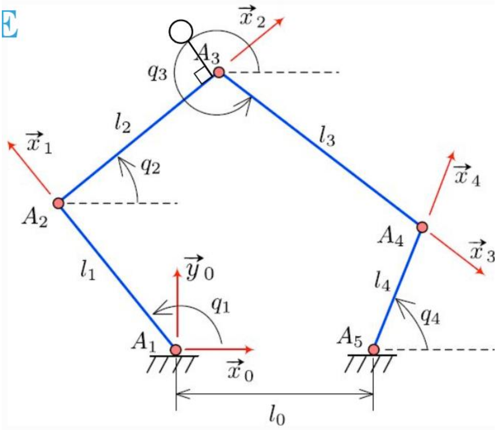
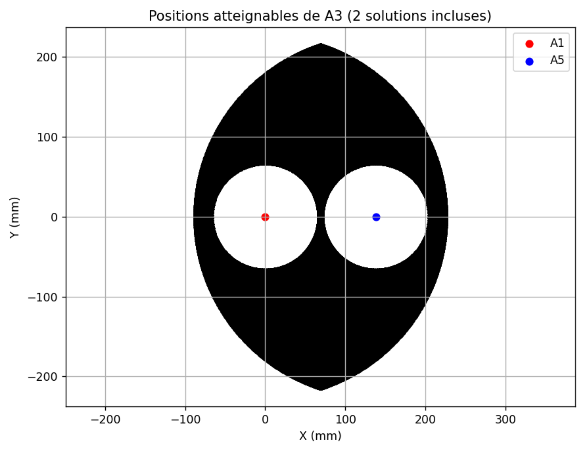
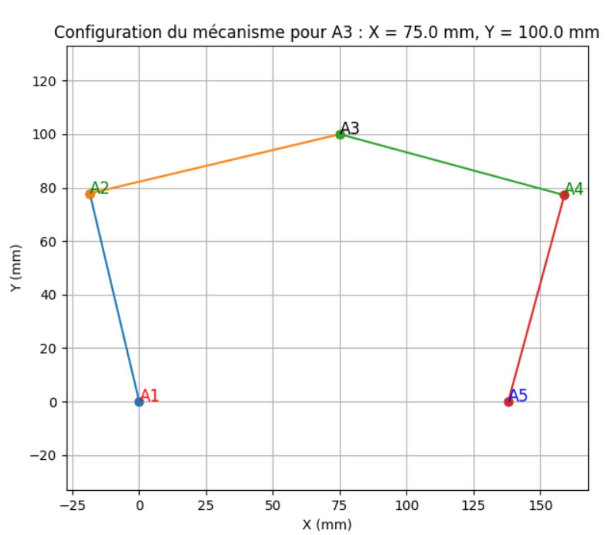

Comparaison entre résultats pratiques et analyse théorique
Le but de cette partie est de comparer les résultats obtenus dans la pratique grâce à la maquette avec une analyse théorique obtenue grâce à un code Python. Pour répondre à cet objectif, nous allons :
Équation reliant le point A3 et \(q_1\) et \(q_2\)
Vérifier ces équations en utilisant le modèle géométrique direct
Utiliser le MGI afin d’avoir \((q_1, q_2) = f(X_{A3}, Y_{A3})\)
I. Équation reliant le point A3 et \(q_1\) et \(q_2\)
On choisit la mise en donnée suivante : on prend la base 0 comme origine du repère au point \(A_1\).
{kind=link}

Nous faisons deux fermetures géométriques :
En projetant dans la base 0, on obtient :
On pose afin de simplifier les équations :
En faisant \((5)-(7)\) et \((6)-(8)\) on obtient :
En soustrayant \((12)-(11)\) :
avec
On peut réécrire l’équation sous la forme :
avec
En injectant dans \((11)\) :
avec
Pour finir, on a :
II. Vérifier ces équations en utilisant le modèle géométrique direct
En traçant \(y\) et les deux solutions pour \(x\), on peut obtenir tous les points atteignables avec le mécanisme. Ainsi il est possible de comparer si le modèle est correct en déplaçant manuellement l’effecteur dans l’espace.
{kind=link}

On balaye les angles \(q_1\) et \(q_4\) afin d’obtenir toute la zone accessible par l’effecteur.
Code Python :
import numpy as np
import matplotlib.pyplot as plt
import tkinter as tk
from tkinter import messagebox
# --- Paramètres géométriques du mécanisme ---
l0 = 137.98
l1 = 80
l4 = 80
l2 = 146.3
l3 = 146.3
A1 = np.array([0.0, 0.0])
A5 = np.array([l0, 0.0])
# FONCTION 1 : Résolution de q1 à partir de A3
def solve_q1(A3):
x, y = A3
r = np.hypot(x, y)
if r == 0:
return []
c = l1 / r
if c > 1:
return []
phi = np.arctan2(y, x)
alpha = np.arccos(c)
return [phi + alpha, phi - alpha]
# FONCTION 2 : Résolution de q4 à partir de A3
def solve_q4(A3):
x, y = A3
X = l0 - x
Y = y
r = np.hypot(X, Y)
if r == 0:
return []
c = l4 / r
if c > 1:
return []
phi = np.arctan2(Y, X)
alpha = np.arccos(c)
return [phi + alpha, phi - alpha]
# FONCTION 3 : Trace une configuration du mécanisme
def plot_configuration(q1, q4, A3):
A2 = A1 + np.array([l1*np.cos(q1), l1*np.sin(q1)])
A4 = A5 + np.array([-l4*np.cos(q4), l4*np.sin(q4)])
plt.figure(figsize=(7,6))
plt.plot([A1[0], A2[0]], [A1[1], A2[1]], '-o')
plt.plot([A2[0], A3[0]], [A2[1], A3[1]], '-o')
plt.plot([A3[0], A4[0]], [A3[1], A4[1]], '-o')
plt.plot([A4[0], A5[0]], [A4[1], A5[1]], '-o')
plt.scatter(A1[0], A1[1], color='red')
plt.scatter(A5[0], A5[1], color='blue')
plt.scatter(A2[0], A2[1], color='green')
plt.scatter(A4[0], A4[1], color='green')
plt.scatter(A3[0], A3[1], color='black')
plt.text(A1[0], A1[1], "A1", fontsize=12, color='red')
plt.text(A2[0], A2[1], "A2", fontsize=12, color='green')
plt.text(A3[0], A3[1], "A3", fontsize=12, color='black')
plt.text(A4[0], A4[1], "A4", fontsize=12, color='green')
plt.text(A5[0], A5[1], "A5", fontsize=12, color='blue')
plt.axis('equal')
plt.grid(True)
plt.title(f"Configuration du mécanisme pour A3 : X = {A3[0]} mm, Y = {A3[1]} mm")
plt.xlabel("X (mm)")
plt.ylabel("Y (mm)")
plt.show()
# FENÊTRE POP-UP TKINTER
def launch_gui():
def validate():
try:
x = float(entry_x.get())
y = float(entry_y.get())
except ValueError:
messagebox.showerror("Erreur", "Veuillez entrer des nombres valides.")
return
A3 = np.array([x, y])
q1_list = solve_q1(A3)
q4_list = solve_q4(A3)
if len(q1_list) == 0 or len(q4_list) == 0:
messagebox.showerror("Erreur", "Cette position A3 n'est pas atteignable.")
return
q1 = q1_list[0]
q4 = q4_list[0]
window.destroy()
print("\n--- ANGLES EN DEGRÉS ---")
print(f"q1 = {np.degrees(q1):.2f}°")
print(f"q4 = {np.degrees(q4):.2f}°")
plot_configuration(q1, q4, A3)
window = tk.Tk()
window.title("Choisir les coordonnées de A3")
tk.Label(window, text="X (mm) :").grid(row=0, column=0)
tk.Label(window, text="Y (mm) :").grid(row=1, column=0)
entry_x = tk.Entry(window)
entry_y = tk.Entry(window)
entry_x.grid(row=0, column=1)
entry_y.grid(row=1, column=1)
btn = tk.Button(window, text="Valider", command=validate)
btn.grid(row=2, column=0, columnspan=2)
window.mainloop()
launch_gui()
III. Utiliser le MGI afin d’avoir \((q_1, q_2) = f(X_{A3}, Y_{A3})\)
Maintenant que le modèle est vérifié, on peut passer au modèle indirect. Le code suivant permet de tracer les positions possibles du système. Il faut entrer les coordonnées du point \(A3\) souhaité. Si le point n’est pas atteignable, le code renverra une erreur.
{kind=link}

import numpy as np
import matplotlib.pyplot as plt
import tkinter as tk
from tkinter import messagebox
# ===================================================
# CONSTANTES GEOMETRIQUES (RIGIDES)
# ===================================================
L0 = 137.98
L1 = 80.0
L2 = 146.3
L3 = 146.3
L4 = 80.0
A1 = np.array([0.0, 0.0])
A5 = np.array([L0, 0.0])
ANGLE_REF = 2 * np.pi / 3 # 120°
# ===================================================
# OUTILS
# ===================================================
def normalize_angle(a):
return a % (2 * np.pi)
def angle_valid(a):
d = np.degrees(a)
return not (300 <= d < 360)
def circles_intersection(C1, r1, C2, r2):
d = np.linalg.norm(C2 - C1)
if d > r1 + r2 or d < abs(r1 - r2) or d == 0:
return []
a = (r1**2 - r2**2 + d**2) / (2 * d)
h = np.sqrt(max(r1**2 - a**2, 0.0))
P = C1 + a * (C2 - C1) / d
perp = np.array([-(C2 - C1)[1], (C2 - C1)[0]]) / d
return [P + h * perp, P - h * perp]
def segments_intersect(p1, p2, p3, p4):
def ccw(a, b, c):
return (c[1]-a[1])*(b[0]-a[0]) > (b[1]-a[1])*(c[0]-a[0])
return ccw(p1, p3, p4) != ccw(p2, p3, p4) and \
ccw(p1, p2, p3) != ccw(p1, p2, p4)
# ===================================================
# INVERSE CINEMATIQUE : A3 -> (q1, q4)
# ===================================================
def solve_from_A3(A3):
A2_list = circles_intersection(A1, L1, A3, L2)
A4_list = circles_intersection(A5, L4, A3, L3)
solutions = []
for A2 in A2_list:
theta1 = np.arctan2(A2[1] - A1[1], A2[0] - A1[0])
q1 = normalize_angle(theta1 - ANGLE_REF)
if not angle_valid(q1):
continue
for A4 in A4_list:
# ✅ CORRECTION ICI
theta4 = np.arctan2(A4[1] - A5[1], A4[0] - A5[0])
q4 = normalize_angle(theta4 - ANGLE_REF)
if not angle_valid(q4):
continue
if segments_intersect(A1, A2, A3, A4):
continue
if segments_intersect(A2, A3, A4, A5):
continue
solutions.append((q1, q4, A2, A4))
return solutions
# ===================================================
# TRACE
# ===================================================
def plot_solution(q1, q4, A2, A3, A4):
plt.figure(figsize=(6, 6))
for P, Q in [(A1, A2), (A2, A3), (A3, A4), (A4, A5)]:
plt.plot([P[0], Q[0]], [P[1], Q[1]], '-o')
for name, P in zip(
["A1", "A2", "A3", "A4", "A5"],
[A1, A2, A3, A4, A5]
):
plt.text(P[0], P[1], name)
plt.axis("equal")
plt.grid(True)
plt.title("Quadrilatère articulé – cohérence q4 OK")
plt.show()
# ===================================================
# GUI
# ===================================================
def launch_gui():
def validate():
try:
x = float(entry_x.get())
y = float(entry_y.get())
except ValueError:
messagebox.showerror("Erreur", "Coordonnées invalides.")
return
A3 = np.array([x, y])
sols = solve_from_A3(A3)
if not sols:
messagebox.showerror("Erreur", "Position A3 non réalisable.")
return
q1, q4, A2, A4 = sols[0]
window.destroy()
q1_1023 = q1*1023/360
q4_1023 = q4*1023/360
print("\n--- ANGLES COHERENTS ---")
print(f"q1 = {np.degrees(q1):.2f}°")
print(f"q4 = {np.degrees(q4):.2f}°")
print(f"q1 = {np.degrees(q1_1023):.2f}")
print(f"q4 = {np.degrees(q4_1023):.2f}")
plot_solution(q1, q4, A2, A3, A4)
window = tk.Tk()
window.title("A3 → angles (réf 120°)")
tk.Label(window, text="X A3 (mm)").grid(row=0, column=0)
tk.Label(window, text="Y A3 (mm)").grid(row=1, column=0)
entry_x = tk.Entry(window)
entry_y = tk.Entry(window)
entry_x.grid(row=0, column=1)
entry_y.grid(row=1, column=1)
tk.Button(window, text="Valider", command=validate)\
.grid(row=2, column=0, columnspan=2)
window.mainloop()
launch_gui()